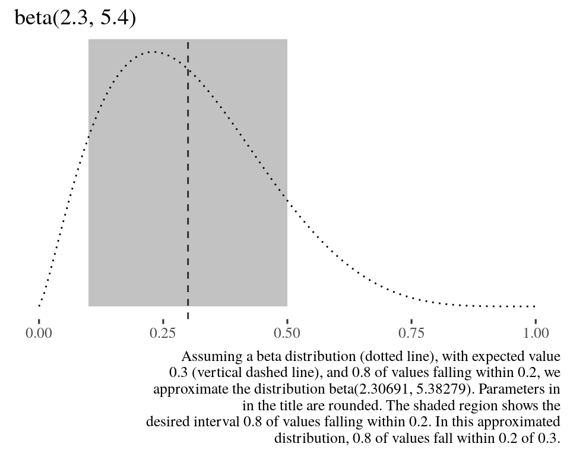
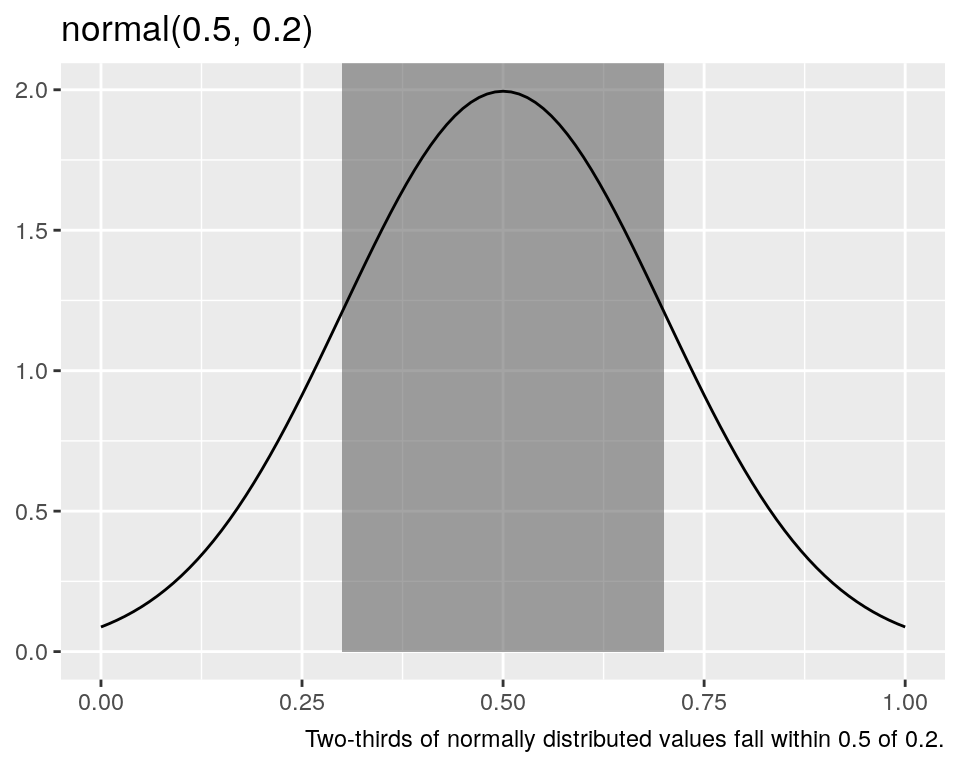
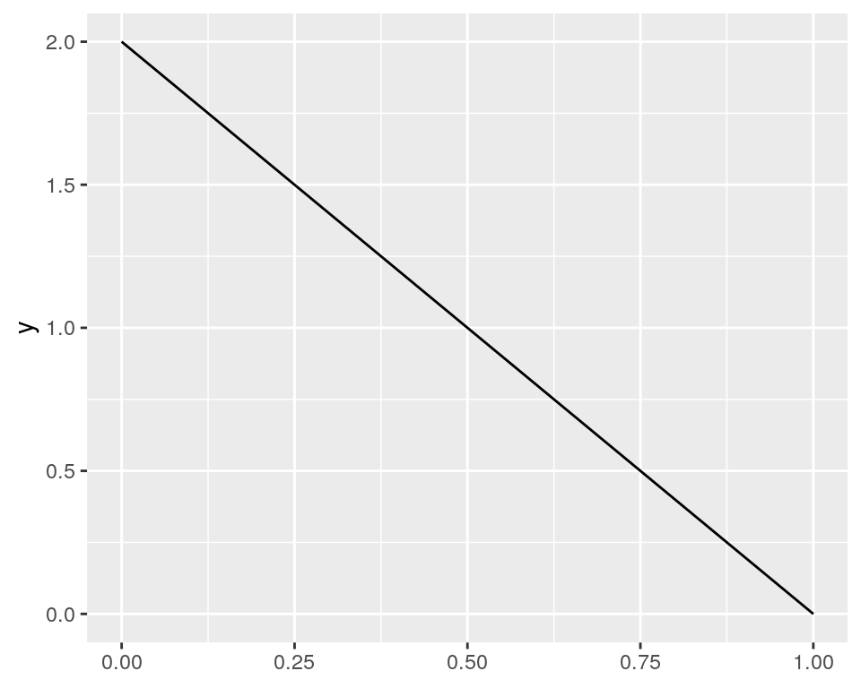

Do you use beta distributions in your science? Do you find the parameters uninterpretable?
Obtain parameters for the beta distribution from interpretable conditions.
devtools::install_github("softloud/parameterpal", build_vignettes = TRUE)library(parameterpal)usage_example <- list(
expected_value = 0.3,
within = 0.2,
this_much = 0.8
) Suppose we expect a value of 0.3, with 80 per cent of observations falling within a distance of 0.2 from 0.3.
That is, we expect 80 per cent of observations to fall within (0.1, 0.5). Assuming data follow a beta distribution, what are its parameters?
beta_pal(expected_value = usage_example$expected_value,
within = usage_example$within,
this_much = usage_example$this_much)
#> $shape1_est
#> [1] 2.306909
#>
#> $shape2_est
#> [1] 5.382787We can plot this intuition to see the shape of the resulting beta distribution.
beta_plot(expected_value = usage_example$expected_value,
within = usage_example$within,
this_much = usage_example$this_much)
Specifying the width enables us to escape the ubiquitous tyranny of the arbitary bounds of 95 per cent, which doesn’t necessarily reflect our intuition, suppose we thought only
new_example_width <- 0.3
30 per cent of values fall within the interval.
beta_pal(expected_value = usage_example$expected_value,
within = usage_example$within,
this_much = new_example_width)
#> $shape1_est
#> [1] 0.3087453
#>
#> $shape2_est
#> [1] 0.7204056Lest try to use parameterpal in this interactive code chunks. Whenever you encounter one, you can click Submit Answer to run (or re-run) the code in the chunk. If there is a Solution button, you can click it to see a proposed answer.
Complete the code below with your own values and run de code to see the result
beta_plot(expected_value = ___,
within = ___,
this_much = ___)
Remeber that you _expect a value_, with a per cent of observations falling _within_ a distance from that _expected_value_.
# This is an example solution,
# you can use any value that you need in every argument of the beta_plot function
beta_plot(expected_value = 0.5,
within = 0.3,
this_much = 0.9)
Now, you can try to get the parameters. Complete the code below with your own values and run de code to see the result.
beta_pal(expected_value = ___,
within = ___,
this_much = ___)
Remeber that you _expect a value_, with a per cent of observations falling _within_ a distance from that _expected_value_.
# This is an example solution,
# you can use any value that you need in every argument of the beta_plot function
beta_pal(expected_value = 0.5,
within = 0.3,
this_much = 0.9)
Rather than knowing intrinsically what parameters are required for a distribution, scientists tend to have indirect knowledge. A researcher may have a sense of what value they expect a measure to take, how many observations should fall within a certain distance of that value. As well as the overall shape of the data, the distribution. Distributions are not defined in the intuitive terms the scientist has, but equational parameters commonly (but not always) \(\mu\) and \(\sigma\) for the normal distribution, \(\lambda\) for the exponential, and \(\alpha\) and \(\beta\) for the beta distribution. However, calculating the required parameters is not necessarily straightfoward, despite the conditioning we receive from the normal distribution.
# set normal distribution example parameters
norm_expected_value <- 0.5
norm_within <- 0.2For the normal distribution, obtaining the parameters from these assumptions is straightforward. The expected value and variance, which is to say, centre and spread, of the normal distribution, are both easily interpretable and translate directly to the parameters required for the distribution. So, to sample three values from a normal distribution where we expect a value of 0.5 with two-thirds of values falling within 0.2 of 0.5, we simply run the following code.
rnorm(n = 3,
mean = norm_expected_value,
sd = norm_within)
#> [1] 0.4486365 0.7443479 0.5711182The first parameter is the expected value, and the second, the variance. For the normal distribution, the standard deviation is interpretable. We know two-thirds of values fall within one standard deviation of the mean. If we shade this area in a visualisation, it’s convincing that two-thirds of values fall within this range.
library(ggplot2)
ggplot() +
xlim(0, 1) +
geom_rect(
aes(
xmin = norm_expected_value - norm_within,
xmax = norm_expected_value + norm_within,
ymin = 0,
ymax = Inf,
alpha = 0.2)) +
stat_function(
fun = dnorm,
args = list(mean = norm_expected_value, sd = norm_within)
) +
theme(legend.position = "none") +
labs(
y = NULL,
title = sprintf("normal(%g, %g)", norm_expected_value, norm_within),
caption = sprintf("Two-thirds of normally distributed values fall within %g of %g.", norm_expected_value, norm_within)
)
The beta distribution, on the other hand, requires two shape parameters, shape1 and shape2, which do not immediately reflect our intuition of what value we expect the measure to take, nor how much variance we expect.
But if we wished to sample from beta distribution, however, the parameters, shape1 and shape2, are not readily interpretable from expected value and variance. parameterpal:: provides a means of obtaining the parameters required for the beta distribution from interpretable conditions.
The beta distribution has some really nice properties. It is bounded by a minimum value of 0 and a maximum of 1, so is perfect for modeling proportions.
Under some circumstances it can mimic a truncated bell curve, as well as flexibility for other shapes, such as a truncated parabola.
But this is not intuitive. What shape do we expect \(\mathrm{beta}(1,2)\) to take? It’s hard to intuit from the parameters 1 and 2. But, we likely do not expect a negatively sloped line.
ggplot() +
xlim(0, 1) +
stat_function(
fun = dbeta,
args = list(shape1 = 1, shape2 = 2)
)
This code was developed for softloud/simeta::, research software that supported softloud’s dissertation. This problem is a very small component of a larger collection of simulation functions for randomly generating meta-analysis data.
In this case, given a population \(N\), what proportion are allocated to the case and control groups? A desire to reflect the uncertainty of designed experiments motivated this code.
For example, even if case and control groups were assigned evenly, in experimental science there are many reasons individuals may drop out of the groups. Thus a proportion of \(N\) was sampled from a beta distribution (which is bounded between 0 and 1, as proportions are, too), with an intuition of how many drop outs are anticipated.
citation(package = "parameterpal")
#>
#> To cite package 'parameterpal' in publications use:
#>
#> Charles Gray, Hien Nguyen, Matthew Grainger, Matthew Henderson and
#> Daniel Oberski (2020). parameterpal: Intepretable parameters for the
#> beta distribution. R package version 0.0.1.
#>
#> A BibTeX entry for LaTeX users is
#>
#> @Manual{,
#> title = {parameterpal: Intepretable parameters for the beta distribution},
#> author = {Charles Gray and Hien Nguyen and Matthew Grainger and Matthew Henderson and Daniel Oberski},
#> year = {2020},
#> note = {R package version 0.0.1},
#> }Contributions are very welcome. By submitting your work, you are agreeing that it may incorporated in either original or edited form and released under the same license as the rest of this material (see License). If your contribution is incorporated, I will add you to the acknowledgments (unless you request otherwise).
The source code for this package is stored on GitHub at:
https://github.com/softloud/parameterpal
If you know how to use Git and GitHub and would like to change, fix, or add something, please submit a pull request. If you want to report an error, ask a question, or make a suggestion, please file an issue in the repository. You need to have a GitHub account in order to do this, but do not need to know how to use Git.
Finally, I always enjoy hearing how people have used this package.
Copyright (c) 2020 Charles Gray
This packages is licensed under the MIT License
Permission is hereby granted, free of charge, to any person obtaining a copy of this software and associated documentation files (the “Software”), to deal in the Software without restriction, including without limitation the rights to use, copy, modify, merge, publish, distribute, sublicense, and/or sell copies of the Software, and to permit persons to whom the Software is furnished to do so, subject to the following conditions:
The above copyright notice and this permission notice shall be included in all copies or substantial portions of the Software.
THE SOFTWARE IS PROVIDED “AS IS”, WITHOUT WARRANTY OF ANY KIND, EXPRESS OR IMPLIED, INCLUDING BUT NOT LIMITED TO THE WARRANTIES OF MERCHANTABILITY, FITNESS FOR A PARTICULAR PURPOSE AND NONINFRINGEMENT. IN NO EVENT SHALL THE AUTHORS OR COPYRIGHT HOLDERS BE LIABLE FOR ANY CLAIM, DAMAGES OR OTHER LIABILITY, WHETHER IN AN ACTION OF CONTRACT, TORT OR OTHERWISE, ARISING FROM, OUT OF OR IN CONNECTION WITH THE SOFTWARE OR THE USE OR OTHER DEALINGS IN THE SOFTWARE.